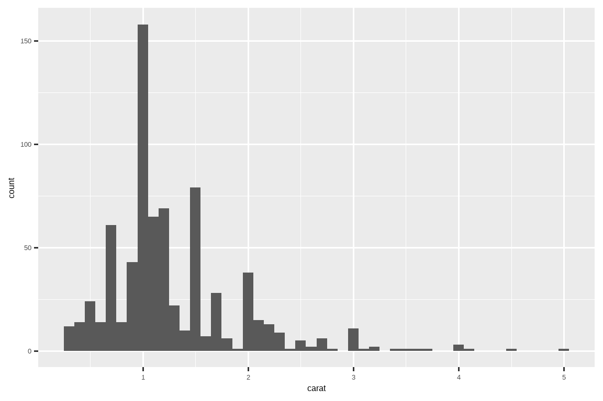

26 迭代
26.1 引言
在本章中，你将学习迭代的工具，即在不同对象上重复执行相同的操作。R 语言中的迭代通常看起来与其他编程语言大相径庭，因为很多迭代是隐式的，我们可以免费获得。例如，如果你想在 R 中将一个数值向量 x 的每个元素都乘以 2，你只需写 2 * x。在大多数其他语言中，你需要使用某种 for 循环来显式地将 x 的每个元素乘以 2。
本书已经为你提供了一些小而强大的工具，可以对多个“事物”执行相同的操作：
-
facet_wrap()和facet_grid()为每个子集绘制一幅图。 -
group_by()加上summarize()为每个子集计算汇总统计量。 -
unnest_wider()和unnest_longer()为列表列的每个元素创建新的行和列。
现在是时候学习一些更通用的工具了，这些工具通常被称为 函数式编程 (functional programming) 工具，因为它们是围绕着接收其他函数作为输入的函数构建的。学习函数式编程很容易变得抽象，但在本章中，我们将通过关注三个常见的任务来保持具体：修改多个列、读取多个文件和保存多个对象。
26.1.1 先决条件
在本章中，我们将重点关注 dplyr 和 purrr 提供的工具，它们都是 tidyverse 的核心成员。你之前已经见过 dplyr，但 purrr 是新内容。本章我们只会使用几个 purrr 函数，但随着你编程技能的提高，它是一个值得探索的优秀包。
26.2 修改多个列
假设你有下面这个简单的 tibble，并且你想计算观测值的数量并计算每一列的中位数。
你可以通过复制粘贴来完成：
这违反了我们“绝不复制粘贴超过两次”的经验法则，而且你可以想象，如果你有几十甚至上百列，这将变得非常繁琐。相反，你可以使用 across()：
across() 有三个特别重要的参数，我们将在接下来的部分中详细讨论。每次使用 across() 时，你都会用到前两个参数：第一个参数 .cols 指定了你想要迭代的列，第二个参数 .fns 指定了如何处理每一列。当你需要对输出列的名称进行额外控制时，可以使用 .names 参数，这在使用 across() 配合 mutate() 时尤其重要。我们还将讨论两个重要的变体，if_any() 和 if_all()，它们与 filter() 一起工作。
26.2.1 使用 .cols 选择列
across() 的第一个参数 .cols 用于选择要转换的列。这与 select() 使用相同的规范，详见 Section 3.3.2，因此你可以使用像 starts_with() 和 ends_with() 这样的函数来根据列名选择列。
还有两种对 across() 特别有用的选择技术：everything() 和 where()。everything() 很直接：它选择所有（非分组）列：
df <- tibble(
grp = sample(2, 10, replace = TRUE),
a = rnorm(10),
b = rnorm(10),
c = rnorm(10),
d = rnorm(10)
)
df |>
group_by(grp) |>
summarize(across(everything(), median))
#> # A tibble: 2 × 5
#> grp a b c d
#> <int> <dbl> <dbl> <dbl> <dbl>
#> 1 1 -0.0935 -0.0163 0.363 0.364
#> 2 2 0.312 -0.0576 0.208 0.565注意，分组列（这里是 grp）不包含在 across() 的选择范围内，因为它们会被 summarize() 自动保留。
where() 允许你根据列的类型来选择列：
-
where(is.numeric)选择所有数值列。 -
where(is.character)选择所有字符串列。 -
where(is.Date)选择所有日期列。 -
where(is.POSIXct)选择所有日期时间列。 -
where(is.logical)选择所有逻辑列。
就像其他选择器一样，你可以将它们与布尔代数结合起来。例如，!where(is.numeric) 选择所有非数值列，而 starts_with("a") & where(is.logical) 选择所有名称以 “a” 开头的逻辑列。
26.2.2 调用单个函数
across() 的第二个参数定义了每一列将如何被转换。在简单的情况下，如上所示，这将是一个现有的函数。这是 R 的一个很特别的特性：我们将一个函数（median、mean、str_flatten 等）传递给另一个函数（across）。这是使 R 成为一门函数式编程语言的特性之一。
需要注意的是，我们是将这个函数传递给 across()，以便 across() 可以调用它；我们不是自己调用它。这意味着函数名后面不应该有 ()。如果你忘了这一点，你会得到一个错误：
df |>
group_by(grp) |>
summarize(across(everything(), median()))
#> Error in `summarize()`:
#> ℹ In argument: `across(everything(), median())`.
#> Caused by error in `median.default()`:
#> ! argument "x" is missing, with no default这个错误是因为你调用函数时没有提供输入，例如：
median()
#> Error in median.default(): argument "x" is missing, with no default26.2.3 调用多个函数
在更复杂的情况下，你可能想要提供额外的参数或执行多个转换。让我们用一个简单的例子来引出这个问题：如果我们的数据中有一些缺失值会发生什么？median() 会传播这些缺失值，给我们一个次优的输出：
rnorm_na <- function(n, n_na, mean = 0, sd = 1) {
sample(c(rnorm(n - n_na, mean = mean, sd = sd), rep(NA, n_na)))
}
df_miss <- tibble(
a = rnorm_na(5, 1),
b = rnorm_na(5, 1),
c = rnorm_na(5, 2),
d = rnorm(5)
)
df_miss |>
summarize(
across(a:d, median),
n = n()
)
#> # A tibble: 1 × 5
#> a b c d n
#> <dbl> <dbl> <dbl> <dbl> <int>
#> 1 NA NA NA 1.15 5如果我们能将 na.rm = TRUE 传递给 median() 来移除这些缺失值，那就太好了。为此，我们需要创建一个新函数，该函数使用所需的参数调用 median()，而不是直接调用 median()：
这种写法有点冗长，所以 R 提供了一个方便的快捷方式：对于这种一次性的或匿名1函数，你可以用 \ 替换 function2：
无论哪种情况，across() 实际上都等同于以下代码：
当我们从 median() 中移除缺失值时，知道究竟移除了多少个值会很有用。我们可以通过向 across() 提供两个函数来实现这一点：一个用于计算中位数，另一个用于计算缺失值的数量。你可以通过向 .fns 参数提供一个命名的列表来提供多个函数：
df_miss |>
summarize(
across(a:d, list(
median = \(x) median(x, na.rm = TRUE),
n_miss = \(x) sum(is.na(x))
)),
n = n()
)
#> # A tibble: 1 × 9
#> a_median a_n_miss b_median b_n_miss c_median c_n_miss d_median d_n_miss
#> <dbl> <int> <dbl> <int> <dbl> <int> <dbl> <int>
#> 1 0.139 1 -1.11 1 -0.387 2 1.15 0
#> # ℹ 1 more variable: n <int>如果你仔细观察，你可能会直观地感觉到列名是使用了一个类似 {.col}_{.fn} 的 glue 规范（Section 14.3.2）来命名的，其中 .col 是原始列的名称，.fn 是函数的名称。这并非巧合！正如你将在下一节中学到的，你可以使用 .names 参数来提供你自己的 glue 规范。
26.2.4 列名
across() 的结果根据 .names 参数中提供的规范来命名。如果我们想让函数名排在前面，我们可以指定自己的命名方式3：
df_miss |>
summarize(
across(
a:d,
list(
median = \(x) median(x, na.rm = TRUE),
n_miss = \(x) sum(is.na(x))
),
.names = "{.fn}_{.col}"
),
n = n(),
)
#> # A tibble: 1 × 9
#> median_a n_miss_a median_b n_miss_b median_c n_miss_c median_d n_miss_d
#> <dbl> <int> <dbl> <int> <dbl> <int> <dbl> <int>
#> 1 0.139 1 -1.11 1 -0.387 2 1.15 0
#> # ℹ 1 more variable: n <int>当你将 across() 与 mutate() 一起使用时，.names 参数尤其重要。默认情况下，across() 的输出与输入的名称相同。这意味着在 mutate() 内部使用 across() 将会替换现有的列。例如，这里我们使用 coalesce() 将 NA 替换为 0：
如果你想创建新的列，可以使用 .names 参数为输出指定新的名称：
df_miss |>
mutate(
across(a:d, \(x) coalesce(x, 0), .names = "{.col}_na_zero")
)
#> # A tibble: 5 × 8
#> a b c d a_na_zero b_na_zero c_na_zero d_na_zero
#> <dbl> <dbl> <dbl> <dbl> <dbl> <dbl> <dbl> <dbl>
#> 1 0.434 -1.25 NA 1.60 0.434 -1.25 0 1.60
#> 2 NA -1.43 -0.297 0.776 0 -1.43 -0.297 0.776
#> 3 -0.156 -0.980 NA 1.15 -0.156 -0.980 0 1.15
#> 4 -2.61 -0.683 -0.785 2.13 -2.61 -0.683 -0.785 2.13
#> 5 1.11 NA -0.387 0.704 1.11 0 -0.387 0.70426.2.5 筛选
across() 与 summarize() 和 mutate() 是绝佳的搭配，但与 filter() 一起使用时就比较尴尬了，因为你通常需要用 | 或 & 来组合多个条件。很明显，across() 可以帮助创建多个逻辑列，但接下来该怎么办呢？因此，dplyr 提供了 across() 的两个变体，名为 if_any() 和 if_all()：
# 等同于 df_miss |> filter(is.na(a) | is.na(b) | is.na(c) | is.na(d))
df_miss |> filter(if_any(a:d, is.na))
#> # A tibble: 4 × 4
#> a b c d
#> <dbl> <dbl> <dbl> <dbl>
#> 1 0.434 -1.25 NA 1.60
#> 2 NA -1.43 -0.297 0.776
#> 3 -0.156 -0.980 NA 1.15
#> 4 1.11 NA -0.387 0.704
# 等同于 df_miss |> filter(is.na(a) & is.na(b) & is.na(c) & is.na(d))
df_miss |> filter(if_all(a:d, is.na))
#> # A tibble: 0 × 4
#> # ℹ 4 variables: a <dbl>, b <dbl>, c <dbl>, d <dbl>
26.2.6 在函数中使用 across()
across() 在编程中特别有用，因为它允许你对多个列进行操作。例如，Jacob Scott 使用了这个小助手函数，它包装了一系列 lubridate 函数，将所有日期列扩展为年、月、日列：
expand_dates <- function(df) {
df |>
mutate(
across(where(is.Date), list(year = year, month = month, day = mday))
)
}
df_date <- tibble(
name = c("Amy", "Bob"),
date = ymd(c("2009-08-03", "2010-01-16"))
)
df_date |>
expand_dates()
#> # A tibble: 2 × 5
#> name date date_year date_month date_day
#> <chr> <date> <dbl> <dbl> <int>
#> 1 Amy 2009-08-03 2009 8 3
#> 2 Bob 2010-01-16 2010 1 16across() 还可以方便地在单个参数中提供多个列，因为它的第一个参数使用了 tidy-select；你只需要记住要拥抱 (embrace) 该参数，正如我们在 Section 25.3.2 中讨论的那样。例如，下面这个函数默认会计算数值列的均值。但是通过提供第二个参数，你可以选择只对选定的列进行汇总：
summarize_means <- function(df, summary_vars = where(is.numeric)) {
df |>
summarize(
across({{ summary_vars }}, \(x) mean(x, na.rm = TRUE)),
n = n(),
.groups = "drop"
)
}
diamonds |>
group_by(cut) |>
summarize_means()
#> # A tibble: 5 × 9
#> cut carat depth table price x y z n
#> <ord> <dbl> <dbl> <dbl> <dbl> <dbl> <dbl> <dbl> <int>
#> 1 Fair 1.05 64.0 59.1 4359. 6.25 6.18 3.98 1610
#> 2 Good 0.849 62.4 58.7 3929. 5.84 5.85 3.64 4906
#> 3 Very Good 0.806 61.8 58.0 3982. 5.74 5.77 3.56 12082
#> 4 Premium 0.892 61.3 58.7 4584. 5.97 5.94 3.65 13791
#> 5 Ideal 0.703 61.7 56.0 3458. 5.51 5.52 3.40 21551
diamonds |>
group_by(cut) |>
summarize_means(c(carat, x:z))
#> # A tibble: 5 × 6
#> cut carat x y z n
#> <ord> <dbl> <dbl> <dbl> <dbl> <int>
#> 1 Fair 1.05 6.25 6.18 3.98 1610
#> 2 Good 0.849 5.84 5.85 3.64 4906
#> 3 Very Good 0.806 5.74 5.77 3.56 12082
#> 4 Premium 0.892 5.97 5.94 3.65 13791
#> 5 Ideal 0.703 5.51 5.52 3.40 21551
26.2.7 与 pivot_longer() 比较
在我们继续之前，有必要指出 across() 和 pivot_longer() (Section 5.3) 之间一个有趣的联系。在许多情况下，你可以通过先转换数据，然后按组而不是按列执行操作来完成相同的计算。例如，看下面这个多函数汇总：
我们可以通过先将数据转换为长格式，然后进行汇总来计算相同的值：
long <- df |>
pivot_longer(a:d) |>
group_by(name) |>
summarize(
median = median(value),
mean = mean(value)
)
long
#> # A tibble: 4 × 3
#> name median mean
#> <chr> <dbl> <dbl>
#> 1 a 0.0380 0.205
#> 2 b -0.0163 0.0910
#> 3 c 0.260 0.0716
#> 4 d 0.540 0.508如果你想要与 across() 相同的结构，你可以再次进行转换：
long |>
pivot_wider(
names_from = name,
values_from = c(median, mean),
names_vary = "slowest",
names_glue = "{name}_{.value}"
)
#> # A tibble: 1 × 8
#> a_median a_mean b_median b_mean c_median c_mean d_median d_mean
#> <dbl> <dbl> <dbl> <dbl> <dbl> <dbl> <dbl> <dbl>
#> 1 0.0380 0.205 -0.0163 0.0910 0.260 0.0716 0.540 0.508这是一个很有用的技巧，因为有时你会遇到一个目前无法用 across() 解决的问题：当你有多组列，并且想要同时对它们进行计算时。例如，假设我们的数据框包含值和权重，我们想要计算加权平均值：
目前没有办法用 across() 来实现这个功能4，但用 pivot_longer() 就相对直接了：
df_long <- df_paired |>
pivot_longer(
everything(),
names_to = c("group", ".value"),
names_sep = "_"
)
df_long
#> # A tibble: 40 × 3
#> group val wts
#> <chr> <dbl> <dbl>
#> 1 a 0.715 0.518
#> 2 b -0.709 0.691
#> 3 c 0.718 0.216
#> 4 d -0.217 0.733
#> 5 a -1.09 0.979
#> 6 b -0.209 0.675
#> # ℹ 34 more rows
df_long |>
group_by(group) |>
summarize(mean = weighted.mean(val, wts))
#> # A tibble: 4 × 2
#> group mean
#> <chr> <dbl>
#> 1 a 0.126
#> 2 b -0.0704
#> 3 c -0.360
#> 4 d -0.248如果需要，你可以用 pivot_wider() 将其转换回原始形式。
26.2.8 练习
-
通过以下方式练习你的
across()技能：计算
palmerpenguins::penguins数据集中每一列的唯一值数量。计算
mtcars数据集中每一列的平均值。将
diamonds按cut、clarity和color分组，然后计算观测数量和每个数值列的平均值。
如果在
across()中使用一个函数列表，但不给它们命名，会发生什么？输出是如何命名的？修改
expand_dates()函数，使其在扩展日期列后自动删除它们。你需要拥抱 (embrace) 任何参数吗？-
解释下面这个函数中管道的每一步都做了什么。我们利用了
where()的什么特殊功能？
26.3 读取多个文件
在上一节中，你学习了如何使用 dplyr::across() 对多个列重复进行转换。在本节中，你将学习如何使用 purrr::map() 对目录中的每个文件执行某些操作。让我们从一个小小的动机开始：假设你有一个装满了你想要读取的 Excel 电子表格的目录5。你可以通过复制粘贴来完成：
data2019 <- readxl::read_excel("data/y2019.xlsx")
data2020 <- readxl::read_excel("data/y2020.xlsx")
data2021 <- readxl::read_excel("data/y2021.xlsx")
data2022 <- readxl::read_excel("data/y2022.xlsx")然后使用 dplyr::bind_rows() 将它们全部合并在一起：
data <- bind_rows(data2019, data2020, data2021, data2022)你可以想象这会很快变得乏味，特别是如果你有数百个文件，而不仅仅是四个。接下来的部分将向你展示如何自动化这类任务。有三个基本步骤：使用 list.files() 列出目录中的所有文件，然后使用 purrr::map() 将每个文件读入一个列表中，最后使用 purrr::list_rbind() 将它们合并成一个单一的数据框。然后我们将讨论如何处理异质性越来越高的情况，即你不能对每个文件都做完全相同的事情。
26.3.1 列出目录中的文件
顾名思义，list.files() 列出目录中的文件。你几乎总是会使用三个参数：
第一个参数
path是要查看的目录。pattern是一个用于过滤文件名的正则表达式。最常见的模式是类似[.]xlsx$或[.]csv$这样的，用来查找所有具有指定扩展名的文件。full.names决定是否应将目录名包含在输出中。你几乎总是希望它为TRUE。
为了使我们的动机示例更具体，本书包含一个文件夹，其中有 12 个 Excel 电子表格，包含了来自 gapminder 包的数据。每个文件包含 142 个国家一年的数据。我们可以通过适当的 list.files() 调用来列出它们：
paths <- list.files("data/gapminder", pattern = "[.]xlsx$", full.names = TRUE)
paths
#> [1] "data/gapminder/1952.xlsx" "data/gapminder/1957.xlsx"
#> [3] "data/gapminder/1962.xlsx" "data/gapminder/1967.xlsx"
#> [5] "data/gapminder/1972.xlsx" "data/gapminder/1977.xlsx"
#> [7] "data/gapminder/1982.xlsx" "data/gapminder/1987.xlsx"
#> [9] "data/gapminder/1992.xlsx" "data/gapminder/1997.xlsx"
#> [11] "data/gapminder/2002.xlsx" "data/gapminder/2007.xlsx"26.3.2 列表
现在我们有了这 12 个路径，我们可以调用 read_excel() 12 次来得到 12 个数据框：
gapminder_1952 <- readxl::read_excel("data/gapminder/1952.xlsx")
gapminder_1957 <- readxl::read_excel("data/gapminder/1957.xlsx")
gapminder_1962 <- readxl::read_excel("data/gapminder/1962.xlsx")
...,
gapminder_2007 <- readxl::read_excel("data/gapminder/2007.xlsx")但是将每个表格放入其自己的变量中，会在接下来的步骤中使它们难以处理。相反，如果我们将它们放入一个单一的对象中，它们会更容易处理。列表 (list) 是完成这项工作的完美工具：
files <- list(
readxl::read_excel("data/gapminder/1952.xlsx"),
readxl::read_excel("data/gapminder/1957.xlsx"),
readxl::read_excel("data/gapminder/1962.xlsx"),
...,
readxl::read_excel("data/gapminder/2007.xlsx")
)现在你已经将这些数据框放入一个列表中，你如何取出一个呢？你可以使用 files[[i]] 来提取第 i<sup>th</sup> 个元素：
files[[3]]
#> # A tibble: 142 × 5
#> country continent lifeExp pop gdpPercap
#> <chr> <chr> <dbl> <dbl> <dbl>
#> 1 Afghanistan Asia 32.0 10267083 853.
#> 2 Albania Europe 64.8 1728137 2313.
#> 3 Algeria Africa 48.3 11000948 2551.
#> 4 Angola Africa 34 4826015 4269.
#> 5 Argentina Americas 65.1 21283783 7133.
#> 6 Australia Oceania 70.9 10794968 12217.
#> # ℹ 136 more rows我们将在 Section 27.3 中更详细地回到 [[。
26.3.3 purrr::map() 和 list_rbind()
“手动”收集这些数据框到列表中的代码，基本上和逐个读取文件的代码一样繁琐。幸运的是，我们可以使用 purrr::map() 来更好地利用我们的 paths 向量。map() 类似于 across()，但它不是对数据框中的每一列做某事，而是对向量中的每个元素做某事。map(x, f) 是以下代码的简写：
list(
f(x[[1]]),
f(x[[2]]),
...,
f(x[[n]])
)所以我们可以使用 map() 来得到一个包含 12 个数据框的列表：
files <- map(paths, readxl::read_excel)
length(files)
#> [1] 12
files[[1]]
#> # A tibble: 142 × 5
#> country continent lifeExp pop gdpPercap
#> <chr> <chr> <dbl> <dbl> <dbl>
#> 1 Afghanistan Asia 28.8 8425333 779.
#> 2 Albania Europe 55.2 1282697 1601.
#> 3 Algeria Africa 43.1 9279525 2449.
#> 4 Angola Africa 30.0 4232095 3521.
#> 5 Argentina Americas 62.5 17876956 5911.
#> 6 Australia Oceania 69.1 8691212 10040.
#> # ℹ 136 more rows(这是另一种用 str() 显示不够紧凑的数据结构，所以你可能想在 RStudio 中加载它并用 View() 来检查它)。
现在我们可以使用 purrr::list_rbind() 将这个数据框列表合并成一个单一的数据框：
list_rbind(files)
#> # A tibble: 1,704 × 5
#> country continent lifeExp pop gdpPercap
#> <chr> <chr> <dbl> <dbl> <dbl>
#> 1 Afghanistan Asia 28.8 8425333 779.
#> 2 Albania Europe 55.2 1282697 1601.
#> 3 Algeria Africa 43.1 9279525 2449.
#> 4 Angola Africa 30.0 4232095 3521.
#> 5 Argentina Americas 62.5 17876956 5911.
#> 6 Australia Oceania 69.1 8691212 10040.
#> # ℹ 1,698 more rows或者我们可以在一个管道中同时完成这两个步骤：
paths |>
map(readxl::read_excel) |>
list_rbind()如果我们想给 read_excel() 传入额外的参数怎么办？我们使用与 across() 相同的技术。例如，用 n_max = 1 预览数据的前几行通常很有用：
paths |>
map(\(path) readxl::read_excel(path, n_max = 1)) |>
list_rbind()
#> # A tibble: 12 × 5
#> country continent lifeExp pop gdpPercap
#> <chr> <chr> <dbl> <dbl> <dbl>
#> 1 Afghanistan Asia 28.8 8425333 779.
#> 2 Afghanistan Asia 30.3 9240934 821.
#> 3 Afghanistan Asia 32.0 10267083 853.
#> 4 Afghanistan Asia 34.0 11537966 836.
#> 5 Afghanistan Asia 36.1 13079460 740.
#> 6 Afghanistan Asia 38.4 14880372 786.
#> # ℹ 6 more rows这清楚地表明缺少了某些东西：没有 year 列，因为这个值记录在路径中，而不是在单个文件中。我们将在下一步解决这个问题。
26.3.4 路径中的数据
有时文件名本身就是数据。在这个例子中，文件名包含了年份，而这个信息在单个文件中并没有记录。为了将这一列加入到最终的数据框中，我们需要做两件事：
首先，我们为路径向量命名。最简单的方法是使用 set_names() 函数，它可以接受一个函数作为参数。这里我们使用 basename() 从完整路径中仅提取文件名：
paths |> set_names(basename)
#> 1952.xlsx 1957.xlsx
#> "data/gapminder/1952.xlsx" "data/gapminder/1957.xlsx"
#> 1962.xlsx 1967.xlsx
#> "data/gapminder/1962.xlsx" "data/gapminder/1967.xlsx"
#> 1972.xlsx 1977.xlsx
#> "data/gapminder/1972.xlsx" "data/gapminder/1977.xlsx"
#> 1982.xlsx 1987.xlsx
#> "data/gapminder/1982.xlsx" "data/gapminder/1987.xlsx"
#> 1992.xlsx 1997.xlsx
#> "data/gapminder/1992.xlsx" "data/gapminder/1997.xlsx"
#> 2002.xlsx 2007.xlsx
#> "data/gapminder/2002.xlsx" "data/gapminder/2007.xlsx"这些名称会被所有的 map 函数自动沿用，所以数据框列表也会有相同的名称：
files <- paths |>
set_names(basename) |>
map(readxl::read_excel)这使得这个 map() 调用成为以下代码的简写：
files <- list(
"1952.xlsx" = readxl::read_excel("data/gapminder/1952.xlsx"),
"1957.xlsx" = readxl::read_excel("data/gapminder/1957.xlsx"),
"1962.xlsx" = readxl::read_excel("data/gapminder/1962.xlsx"),
...,
"2007.xlsx" = readxl::read_excel("data/gapminder/2007.xlsx")
)你也可以使用 [[ 按名称提取元素：
files[["1962.xlsx"]]
#> # A tibble: 142 × 5
#> country continent lifeExp pop gdpPercap
#> <chr> <chr> <dbl> <dbl> <dbl>
#> 1 Afghanistan Asia 32.0 10267083 853.
#> 2 Albania Europe 64.8 1728137 2313.
#> 3 Algeria Africa 48.3 11000948 2551.
#> 4 Angola Africa 34 4826015 4269.
#> 5 Argentina Americas 65.1 21283783 7133.
#> 6 Australia Oceania 70.9 10794968 12217.
#> # ℹ 136 more rows然后，我们使用 list_rbind() 的 names_to 参数，告诉它将名称保存到一个名为 year 的新列中，然后使用 readr::parse_number() 从字符串中提取数字。
paths |>
set_names(basename) |>
map(readxl::read_excel) |>
list_rbind(names_to = "year") |>
mutate(year = parse_number(year))
#> # A tibble: 1,704 × 6
#> year country continent lifeExp pop gdpPercap
#> <dbl> <chr> <chr> <dbl> <dbl> <dbl>
#> 1 1952 Afghanistan Asia 28.8 8425333 779.
#> 2 1952 Albania Europe 55.2 1282697 1601.
#> 3 1952 Algeria Africa 43.1 9279525 2449.
#> 4 1952 Angola Africa 30.0 4232095 3521.
#> 5 1952 Argentina Americas 62.5 17876956 5911.
#> 6 1952 Australia Oceania 69.1 8691212 10040.
#> # ℹ 1,698 more rows在更复杂的情况下，可能还有其他变量存储在目录名中，或者文件名可能包含多个数据片段。在这种情况下，使用 set_names()（不带任何参数）来记录完整路径，然后使用 tidyr::separate_wider_delim() 及其相关函数将它们转换成有用的列。
paths |>
set_names() |>
map(readxl::read_excel) |>
list_rbind(names_to = "year") |>
separate_wider_delim(year, delim = "/", names = c(NA, "dir", "file")) |>
separate_wider_delim(file, delim = ".", names = c("file", "ext"))
#> # A tibble: 1,704 × 8
#> dir file ext country continent lifeExp pop gdpPercap
#> <chr> <chr> <chr> <chr> <chr> <dbl> <dbl> <dbl>
#> 1 gapminder 1952 xlsx Afghanistan Asia 28.8 8425333 779.
#> 2 gapminder 1952 xlsx Albania Europe 55.2 1282697 1601.
#> 3 gapminder 1952 xlsx Algeria Africa 43.1 9279525 2449.
#> 4 gapminder 1952 xlsx Angola Africa 30.0 4232095 3521.
#> 5 gapminder 1952 xlsx Argentina Americas 62.5 17876956 5911.
#> 6 gapminder 1952 xlsx Australia Oceania 69.1 8691212 10040.
#> # ℹ 1,698 more rows26.3.5 保存你的工作
现在你已经完成了所有这些辛苦的工作，得到了一个整洁的数据框，是时候保存你的工作了：
gapminder <- paths |>
set_names(basename) |>
map(readxl::read_excel) |>
list_rbind(names_to = "year") |>
mutate(year = parse_number(year))
write_csv(gapminder, "gapminder.csv")现在，当你将来再次处理这个问题时，你可以只读取一个 csv 文件。对于更大、更丰富的数据集，使用 parquet 可能比 .csv 是一个更好的选择，如 Section 22.4 中所讨论的。
如果你在一个项目（project）中工作，我们建议将执行这类数据准备工作的文件命名为 0-cleanup.R。文件名中的 0 暗示这个文件应该在其他任何文件之前运行。
如果你的输入数据文件会随时间变化，你可能需要考虑学习一个像 targets 这样的工具，来设置你的数据清理代码，使其在任何输入文件被修改时自动重新运行。
26.3.6 多次简单迭代
在这里，我们只是直接从磁盘加载了数据，并幸运地得到了一个整洁的数据集。在大多数情况下，你需要进行一些额外的整理工作，你有两种基本选择：你可以用一个复杂的函数进行一轮迭代，或者用简单的函数进行多轮迭代。根据我们的经验，大多数人首先会选择进行一次复杂的迭代，但通常通过进行多次简单的迭代会更好。
例如，假设你想读入一堆文件，过滤掉缺失值，进行数据转换，然后合并。一种方法是编写一个函数，它接收一个文件并执行所有这些步骤，然后调用 map() 一次：
process_file <- function(path) {
df <- read_csv(path)
df |>
filter(!is.na(id)) |>
mutate(id = tolower(id)) |>
pivot_longer(jan:dec, names_to = "month")
}
paths |>
map(process_file) |>
list_rbind()或者，你可以对每个文件执行 process_file() 的每一步：
paths |>
map(read_csv) |>
map(\(df) df |> filter(!is.na(id))) |>
map(\(df) df |> mutate(id = tolower(id))) |>
map(\(df) df |> pivot_longer(jan:dec, names_to = "month")) |>
list_rbind()我们推荐这种方法，因为它能防止你在转向处理其余文件之前，过分专注于把第一个文件处理得完美无瑕。通过在进行整理和清理时考虑所有数据，你更有可能进行整体思考，并最终得到更高质量的结果。
在这个特定的例子中，还有另一个可以做的优化，就是更早地将所有数据框绑定在一起。然后你可以依赖常规的 dplyr 行为：
paths |>
map(read_csv) |>
list_rbind() |>
filter(!is.na(id)) |>
mutate(id = tolower(id)) |>
pivot_longer(jan:dec, names_to = "month")26.3.7 异构数据
不幸的是，有时无法直接从 map() 转到 list_rbind()，因为数据框的异构性太高，导致 list_rbind() 要么失败，要么产生一个不太有用的数据框。在这种情况下，先加载所有文件仍然是有用的：
files <- paths |>
map(readxl::read_excel) 然后，一个非常有用的策略是捕获数据框的结构，以便你可以用你的数据科学技能来探索它。一种方法是使用这个方便的 df_types 函数6，它返回一个 tibble，每列一行：
df_types <- function(df) {
tibble(
col_name = names(df),
col_type = map_chr(df, vctrs::vec_ptype_full),
n_miss = map_int(df, \(x) sum(is.na(x)))
)
}
df_types(gapminder)
#> # A tibble: 6 × 3
#> col_name col_type n_miss
#> <chr> <chr> <int>
#> 1 year double 0
#> 2 country character 0
#> 3 continent character 0
#> 4 lifeExp double 0
#> 5 pop double 0
#> 6 gdpPercap double 0然后你可以将这个函数应用于所有文件，并可能进行一些转换，以便更容易地看到差异所在。例如，这使得验证我们一直在处理的 gapminder 电子表格都非常同质化变得容易：
files |>
map(df_types) |>
list_rbind(names_to = "file_name") |>
select(-n_miss) |>
pivot_wider(names_from = col_name, values_from = col_type)
#> # A tibble: 12 × 6
#> file_name country continent lifeExp pop gdpPercap
#> <chr> <chr> <chr> <chr> <chr> <chr>
#> 1 1952.xlsx character character double double double
#> 2 1957.xlsx character character double double double
#> 3 1962.xlsx character character double double double
#> 4 1967.xlsx character character double double double
#> 5 1972.xlsx character character double double double
#> 6 1977.xlsx character character double double double
#> # ℹ 6 more rows如果文件具有异构格式，你可能需要进行更多的处理才能成功合并它们。不幸的是，我们现在要让你自己去解决了，但你可能想读一下关于 map_if() 和 map_at() 的内容。map_if() 允许你根据列表元素的值有选择地修改它们；map_at() 允许你根据它们的名称有选择地修改元素。
26.3.8 处理失败
有时你的数据结构可能足够混乱，以至于你甚至不能用一个命令读取所有文件。然后你会遇到 map() 的一个缺点：它要么整体成功，要么整体失败。map() 要么成功读取目录中的所有文件，要么因错误而失败，一个文件也读不进来。这很烦人：为什么一个失败会阻止你访问所有其他成功的结果？
幸运的是，purrr 提供了一个助手来解决这个问题：possibly()。possibly() 是所谓的函数操作符：它接受一个函数并返回一个行为被修改的函数。具体来说，possibly() 将一个会出错的函数改变为返回你指定的值：
files <- paths |>
map(possibly(\(path) readxl::read_excel(path), NULL))
data <- files |> list_rbind()这在这里特别有效，因为 list_rbind()，像许多 tidyverse 函数一样，会自动忽略 NULL。
现在你有了所有可以轻松读取的数据，是时候解决困难的部分了，即找出为什么有些文件加载失败以及该怎么处理。首先获取失败的路径：
failed <- map_vec(files, is.null)
paths[failed]
#> character(0)然后对每个失败的路径再次调用导入函数，找出问题所在。
26.4 保存多个输出
在上一节中，你学习了 map()，它对于将多个文件读入单个对象很有用。在本节中，我们将探讨一个相反的问题：如何将一个或多个 R 对象保存到一个或多个文件中？我们将通过三个例子来探讨这个挑战：
- 将多个数据框保存到一个数据库中。
- 将多个数据框保存到多个
.csv文件中。 - 将多个图保存到多个
.png文件中。
26.4.1 写入数据库
有时在同时处理许多文件时，不可能一次性将所有数据都装入内存，也就无法执行 map(files, read_csv)。处理这个问题的一种方法是将数据加载到数据库中，这样你就可以用 dbplyr 只访问你需要的部分。
如果你幸运的话，你正在使用的数据库包会提供一个方便的函数，该函数接收一个路径向量并将它们全部加载到数据库中。duckdb 的 duckdb_read_csv() 就是这种情况：
con <- DBI::dbConnect(duckdb::duckdb())
duckdb::duckdb_read_csv(con, "gapminder", paths)这在这里会很好用，但我们没有 csv 文件，而是 Excel 电子表格。所以我们得“手动”来做。学习手动操作也能帮助你在有一堆 csv 文件，而你正在使用的数据库没有一个能一次性加载所有文件的函数时。
我们需要从创建一个我们将用数据填充的表开始。最简单的方法是创建一个模板，一个包含我们想要的所有列但只包含部分数据的虚拟数据框。对于 gapminder 数据，我们可以通过读取单个文件并向其添加年份来制作该模板：
template <- readxl::read_excel(paths[[1]])
template$year <- 1952
template
#> # A tibble: 142 × 6
#> country continent lifeExp pop gdpPercap year
#> <chr> <chr> <dbl> <dbl> <dbl> <dbl>
#> 1 Afghanistan Asia 28.8 8425333 779. 1952
#> 2 Albania Europe 55.2 1282697 1601. 1952
#> 3 Algeria Africa 43.1 9279525 2449. 1952
#> 4 Angola Africa 30.0 4232095 3521. 1952
#> 5 Argentina Americas 62.5 17876956 5911. 1952
#> 6 Australia Oceania 69.1 8691212 10040. 1952
#> # ℹ 136 more rows现在我们可以连接到数据库，并使用 DBI::dbCreateTable() 将我们的模板变成一个数据库表：
con <- DBI::dbConnect(duckdb::duckdb())
DBI::dbCreateTable(con, "gapminder", template)dbCreateTable() 不使用 template 中的数据，只使用变量名和类型。所以如果我们现在检查 gapminder 表，你会看到它是空的，但它有我们需要的变量和我们期望的类型：
con |> tbl("gapminder")
#> # Source: table<gapminder> [?? x 6]
#> # Database: DuckDB v1.3.1 [14913@Windows 10 x64:R 4.5.1/:memory:]
#> # ℹ 6 variables: country <chr>, continent <chr>, lifeExp <dbl>, pop <dbl>,
#> # gdpPercap <dbl>, year <dbl>接下来，我们需要一个函数，它接受单个文件路径，将其读入 R，并将结果添加到 gapminder 表中。我们可以通过结合 read_excel() 和 DBI::dbAppendTable() 来做到这一点：
append_file <- function(path) {
df <- readxl::read_excel(path)
df$year <- parse_number(basename(path))
DBI::dbAppendTable(con, "gapminder", df)
}现在我们需要对 paths 的每个元素调用一次 append_file()。这当然可以用 map() 来实现：
paths |> map(append_file)但我们不关心 append_file() 的输出，所以使用 walk() 会比 map() 稍微好一些。walk() 的作用与 map() 完全相同，但会丢弃输出：
paths |> walk(append_file)现在我们可以看看我们的表中是否包含了所有数据：
26.4.2 写入 csv 文件
如果我们想为每个组写入多个 csv 文件，基本原理是相同的。让我们假设我们想取 ggplot2::diamonds 数据，并为每个 clarity 保存一个 csv 文件。首先，我们需要创建那些单独的数据集。有很多方法可以做到这一点，但有一种我们特别喜欢的方法：group_nest()。
by_clarity <- diamonds |>
group_nest(clarity)
by_clarity
#> # A tibble: 8 × 2
#> clarity data
#> <ord> <list<tibble[,9]>>
#> 1 I1 [741 × 9]
#> 2 SI2 [9,194 × 9]
#> 3 SI1 [13,065 × 9]
#> 4 VS2 [12,258 × 9]
#> 5 VS1 [8,171 × 9]
#> 6 VVS2 [5,066 × 9]
#> # ℹ 2 more rows这给了我们一个有八行两列的新 tibble。clarity 是我们的分组变量，data 是一个列表列，其中包含 clarity 每个唯一值对应的一个 tibble：
by_clarity$data[[1]]
#> # A tibble: 741 × 9
#> carat cut color depth table price x y z
#> <dbl> <ord> <ord> <dbl> <dbl> <int> <dbl> <dbl> <dbl>
#> 1 0.32 Premium E 60.9 58 345 4.38 4.42 2.68
#> 2 1.17 Very Good J 60.2 61 2774 6.83 6.9 4.13
#> 3 1.01 Premium F 61.8 60 2781 6.39 6.36 3.94
#> 4 1.01 Fair E 64.5 58 2788 6.29 6.21 4.03
#> 5 0.96 Ideal F 60.7 55 2801 6.37 6.41 3.88
#> 6 1.04 Premium G 62.2 58 2801 6.46 6.41 4
#> # ℹ 735 more rows趁热打铁，让我们创建一个给出输出文件名的列，使用 mutate() 和 str_glue()：
by_clarity <- by_clarity |>
mutate(path = str_glue("diamonds-{clarity}.csv"))
by_clarity
#> # A tibble: 8 × 3
#> clarity data path
#> <ord> <list<tibble[,9]>> <glue>
#> 1 I1 [741 × 9] diamonds-I1.csv
#> 2 SI2 [9,194 × 9] diamonds-SI2.csv
#> 3 SI1 [13,065 × 9] diamonds-SI1.csv
#> 4 VS2 [12,258 × 9] diamonds-VS2.csv
#> 5 VS1 [8,171 × 9] diamonds-VS1.csv
#> 6 VVS2 [5,066 × 9] diamonds-VVS2.csv
#> # ℹ 2 more rows所以如果我们要手动保存这些数据框，我们可能会这样写：
这与我们之前使用 map() 的情况有点不同，因为有两个参数在变化，而不仅仅是一个。这意味着我们需要一个新的函数：map2()，它同时改变第一个和第二个参数。而且因为我们同样不关心输出，所以我们想要用 walk2() 而不是 map2()。这样我们就得到了：
walk2(by_clarity$data, by_clarity$path, write_csv)26.4.3 保存图表
我们可以采用同样的基本方法来创建多个图表。让我们先创建一个函数来绘制我们想要的图表：
carat_histogram <- function(df) {
ggplot(df, aes(x = carat)) + geom_histogram(binwidth = 0.1)
}
carat_histogram(by_clarity$data[[1]])
现在我们可以使用 map() 来创建一个包含多个图表7及其最终文件路径的列表：
然后使用 walk2() 配合 ggsave() 来保存每个图表：
这是以下代码的简写：
26.5 总结
在本章中，你已经看到了如何使用显式迭代来解决数据科学中经常出现的三个问题：操作多个列、读取多个文件以及保存多个输出。但总的来说，迭代是一种超能力：如果你知道正确的迭代技巧，你可以轻松地从解决一个问题扩展到解决所有问题。一旦你掌握了本章中的技术，我们强烈建议你通过阅读《Advanced R》的 Functionals 章节和查阅 purrr 网站来学习更多内容。
如果你对其他语言中的迭代有很多了解，你可能会惊讶于我们没有讨论 for 循环。这是因为 R 面向数据分析的特性改变了我们迭代的方式：在大多数情况下，你可以依赖现有的惯用法来对每一列或每个组执行操作。而当你无法这样做时，你通常可以使用像 map() 这样的函数式编程工具，它对列表的每个元素执行操作。然而，你会在野外捕获的代码中看到 for 循环，所以你将在下一章中学习它们，届时我们将讨论一些重要的基础 R 工具。
匿名，因为我们从未用
<-明确地给它命名。程序员们使用的另一个术语是“lambda 函数”。↩︎在旧代码中，你可能会看到类似
~ .x + 1的语法。这是编写匿名函数的另一种方式，但它只在 tidyverse 函数内部有效，并且总是使用变量名.x。我们现在推荐使用基础语法\(x) x + 1。↩︎你目前无法更改列的顺序，但可以在事后使用
relocate()或类似函数重新排序。↩︎也许有一天会有，但目前我们还没看到如何实现。↩︎
如果你有一个包含相同格式的 csv 文件的目录，你可以使用 Section 7.4 中的技术。↩︎
我们不打算解释它是如何工作的，但如果你查看所用函数的文档，你应该能弄明白。↩︎
你可以打印
by_clarity$plot来获得一个粗略的动画——你会为plots的每个元素得到一个图。注意：这在我这里没有发生。↩︎